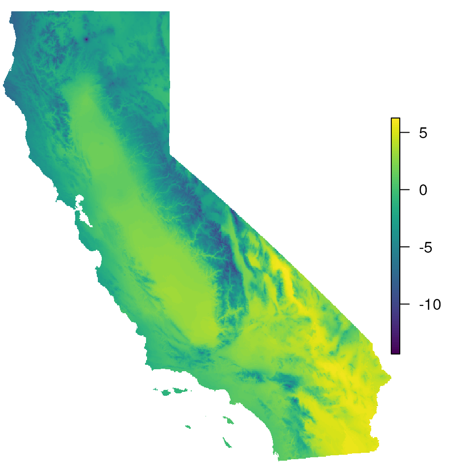

masking_vignette
Masking_vignette.RmdMasking maps for landscape genomics
library(algatr)
library(raster)
#> Loading required package: sp
library(terra)
#> terra 1.7.55
library(viridis)
#> Loading required package: viridisLiteOften, we may want to mask areas of maps to visualize landscape genomics results. For example, we may want to mask areas beyond a study organism’s range, or in areas that are undersampled (or not sampled at all). This allows users to avoid over-interpreting results from several analyses where mapping is a useful visualization tool (e.g., generalized dissimilarity modeling).
This vignette makes use of the following masking functions:
extrap_mask()function to reduce extrapolation by masking areas that fall outside the data (either based on environmental or spatial coverage)plot_extrap_mask()generates a map with masked areasrm_islands()masks specified islands from map
Read in data
# Load test data, including CA_env which are the envlayers we'll be using
load_algatr_example()
#>
#> ---------------- example dataset ----------------
#>
#> Objects loaded:
#> *liz_vcf* vcfR object (1000 loci x 53 samples)
#> *liz_gendist* genetic distance matrix (Plink Distance)
#> *liz_coords* dataframe with x and y coordinates
#> *CA_env* RasterStack with PC environmental layers
#>
#> -------------------------------------------------
#>
#>
# For the purposes of simplicity, let's just use one of the PCs for mapping:
envlayers <- CA_env$CA_rPCA1
par(mar = c(0, 0, 0, 0))
# Let's take a look at the map with no masking:
plot(envlayers, col = viridis(100), axes = FALSE, box = FALSE)
Making masked maps
Make a range-based based
We can use the extrap_mask() function to mask all areas
outside range of environmental values included in data (the
"range" argument). This argument masks conservatively,
meaning that if any area falls outside the range of the data for any
variable, the area is masked.
par(mar = c(0, 0, 0, 0))
# Extrapolate env values for given coordinates
map_mask <- extrap_mask(liz_coords, envlayers, method = "range")
#> Warning in crs_check(coords, envlayers): No CRS found for the provided
#> coordinates. Make sure the coordinates and the raster have the same projection
#> (see function details or vignette)
# Now, plot the map with masked areas
plot_extrap_mask(envlayers, map_mask, RGB_cols = FALSE)
# Let's make the masked areas white with no transparency
plot_extrap_mask(envlayers, map_mask, RGB_cols = FALSE, mask_col = rgb(1, 1, 1, alpha = 1))
Standard deviation-based mask
We can also mask using the "sd" argument, which masks
all areas outside of the mean, +/- some number of standard deviations
outside the environmental values included in data (normalized using the
nsd parameter). This method is still as conservative as the
"range" argument from above.
par(mar = c(0, 0, 0, 0))
# Let's start with nsd=2
map_mask <- extrap_mask(liz_coords, envlayers, method = "sd", nsd = 2)
#> Warning in crs_check(coords, envlayers): No CRS found for the provided
#> coordinates. Make sure the coordinates and the raster have the same projection
#> (see function details or vignette)
plot_extrap_mask(envlayers, map_mask, RGB = FALSE)
# Now, increase nsd to 3 and see how the map masking changes:
map_mask <- extrap_mask(liz_coords, envlayers, method = "sd", nsd = 3)
#> Warning in crs_check(coords, envlayers): No CRS found for the provided
#> coordinates. Make sure the coordinates and the raster have the same projection
#> (see function details or vignette)
plot_extrap_mask(envlayers, map_mask, RGB = FALSE)
Buffer-based mask
We can mask all areas outside of a circular buffer of a fixed width
around the coordinates provided using the "buffer"
argument. Given how the buffer is calculated, this masking is agnostic
to environment. We can adjust the size of the circular buffer using the
buffer_width option.
par(mar = c(0, 0, 0, 0))
map_mask <- extrap_mask(liz_coords, envlayers, method = "buffer", buffer_width = 0.25)
#> Warning in crs_check(coords, envlayers): No CRS found for the provided
#> coordinates. Make sure the coordinates and the raster have the same projection
#> (see function details or vignette)
#> Warning: [mask] CRS do not match
plot_extrap_mask(envlayers, map_mask, RGB = FALSE)
# Increase buffer size
map_mask <- extrap_mask(liz_coords, envlayers, method = "buffer", buffer_width = 0.5)
#> Warning in crs_check(coords, envlayers): No CRS found for the provided
#> coordinates. Make sure the coordinates and the raster have the same projection
#> (see function details or vignette)
#> Warning in crs_check(coords, envlayers): [mask] CRS do not match
plot_extrap_mask(envlayers, map_mask, RGB = FALSE)
# Increase buffer size and change masking color and transparency
map_mask <- extrap_mask(liz_coords, envlayers, method = "buffer", buffer_width = 1)
#> Warning in crs_check(coords, envlayers): No CRS found for the provided
#> coordinates. Make sure the coordinates and the raster have the same projection
#> (see function details or vignette)
#> Warning in crs_check(coords, envlayers): [mask] CRS do not match
plot_extrap_mask(envlayers, map_mask, RGB = FALSE, mask_col = rgb(1, 1, 1, alpha = 1))
Convex hull-based mask
A convex hull describes the smallest convex polygon that contains
sets or points (in this case, sampling coordinates). We can mask all
areas outside of a convex hull around the coordinates provided using the
"chull" argument (this largely uses the
st_convex_hull() function in the sf package). As with the
buffer-based masking, this masking is also agnostic to environment, and
the size of the buffer is once again changed with the
buffer_width argument
par(mar = c(0, 0, 0, 0))
map_mask <- extrap_mask(liz_coords, envlayers, method = "chull")
#> Warning in crs_check(coords, envlayers): No CRS found for the provided
#> coordinates. Make sure the coordinates and the raster have the same projection
#> (see function details or vignette)
plot_extrap_mask(envlayers, map_mask, RGB = FALSE)
# Increase the buffer size
map_mask <- extrap_mask(liz_coords, envlayers, method = "chull", buffer_width = 0.5)
#> Warning in crs_check(coords, envlayers): No CRS found for the provided
#> coordinates. Make sure the coordinates and the raster have the same projection
#> (see function details or vignette)
plot_extrap_mask(envlayers, map_mask, RGB = FALSE)
# Increase the buffer size again
map_mask <- extrap_mask(liz_coords, envlayers, method = "chull", buffer_width = 1)
#> Warning in crs_check(coords, envlayers): No CRS found for the provided
#> coordinates. Make sure the coordinates and the raster have the same projection
#> (see function details or vignette)
plot_extrap_mask(envlayers, map_mask, RGB = FALSE)
Removing islands from maps using rm_islands()
In some cases, if we have no sampling from islands, we do not want
those areas mapped at all and can use the rm_islands()
function to do so. For example, our example dataset does not include the
endemic S. occidentalis subspecies that occurs in the Channel
Islands in California, and thus, we may want to exclude the Channel
Islands from our maps. This function largely uses the
ms_filter_islands() function in the rmapshaper package,
which identifies islands based on them being small in size and detached
from the larger polygon (i.e., mainland). Users can specify the size of
the island to remove using the min_vertices argument, which
is the minimum number of vertices to retain.
Retrieve polygon
First, let’s get the shape (polygon) for the state of California.
This will include the Channel Islands. We can retrieve administrative
boundaries using the gadm() function within the geodata
package.
par(mar = c(0, 0, 0, 0))
states <- getData("GADM", country = "United States", level = 1)
#> Warning in getData("GADM", country = "United States", level = 1): getData will be removed in a future version of raster
#> . Please use the geodata package instead
# states <- gadm("United States", level = 1, path = here())
cali <- states[states$NAME_1 == "California", ]
plot(cali)
Remove islands
The rm_islands() requires a polygon (in our case, the
state of California from above) and the environmental layers we want the
island(s) removed from (in our case, CA_env or
envlayers).
par(mar = c(0, 0, 0, 0))
cali_noislands <- rm_islands(envlayers, cali)
# Now, let's plot the env layer and see how it's removed the Channel Islands
plot(cali_noislands)
This function works even if we have multiple layers, as with
CA_env.
par(mar = c(0, 0, 0, 0))
cali_noislands <- rm_islands(CA_env, cali)
# Islands are gone from all three enviro PC layers
plot(cali_noislands)